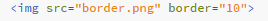

Step 3: How to add links and images to your text
NOTE: you need to download the images provided in the github and save them in the same file as these steps or else the images will not load
content tag, and it means "anchor", this tag needs to have an Attrribute. this is the same thing as the "uft-8" we have at the start of the webpage .having an attrribute means its inside the tag, so instead of "a" and "/a" you would have 'a href=" " ' and '/a'. Note that the closing tag does not get affected by attrributes. The "href=" hyperlink refrence, and anything after the = has to be in quotation marks. after the = you should insert the link you want it to redirect to, and it will function like any other link, between the opening a and the closing a you should add any text that you want the link to be embedded into, this text is what will turn "blue" and will be what needs to be pressed.
Now we are able to distinguish between whether the link should open in a new tab or not. we can do this by, after the link and after the quotation marks which contain the link. you should add another attrribute "target=", this determines where it opens, if you want it to reload in a new tab, add after the = (remember it has to be in quotation marks)' "_blank" '.

to add images, you need to add the tag "img", which is a void tag, meaning it does not have a closing tag. similarly to the link it required an attrribute, in this case we will use "src=", src stans for source. after the source you need to add a url for an image, a good place i would recomend checking is
placeholder.com, this lets you change the size of the image by changing what comes after the ".com", this means you can test out if the image will look good on your screen or not, and lets you find the perfect aspect ratio for your images.
Another, simpler way is to simply download the file, and add it to the folder that your HTML file is located in, then simply replace the link with the name of the image. for example:

This is alot faster and it allows for more simple and more appealing websites.You can also add more attrributes such as the "border" attrribute, this is after the ending of the source, while still inside the img tag, this border creates an image with a border, and the size can be customizable.
